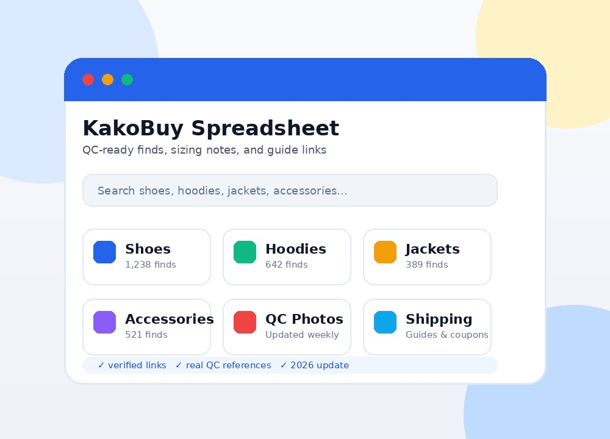

Stop digging through Reddit threads and Weidian stores blind. Our KakoBuy spreadsheet organizes the best agent-ready finds across 11 categories — with QC photos, sizing notes, and honest reviews updated for 2026.

Every category is packed with verified finds — each entry links directly to agent-ready pages so you can order in one click.
If you are new to agent shopping, follow these four steps and skip the confusion.
Start with the category you care about most — shoes, hoodies, or accessories. Each category page in our KakoBuy spreadsheet has hand-picked links that go straight to agent-ready product pages.
Copy the Weidian or Taobao link from the spreadsheet and paste it into KakoBuy's search bar. The agent fills in size, price, and domestic shipping — no manual entry needed.
Once your item arrives at the warehouse, KakoBuy provides QC photos. Compare them against the listing and against any QC references included in the spreadsheet. Request additional photos if something looks off.
Select a shipping line based on your country, weight, and speed preference. Always check for active KakoBuy coupons before paying — shipping discounts can save you 10-30% on larger hauls.
Even experienced buyers fall into these traps. Here is how to avoid them.
A listing photo is marketing — not reality. Always cross-check against QC photos from previous buyers before committing to a purchase.
Asian sizing runs 1-2 sizes smaller than US/EU. Measure a well-fitting item you already own and compare it to the seller's size chart — never guess.
KakoBuy regularly releases shipping coupons and discount codes. Check our shipping coupon guide before every order — you are likely leaving money on the table.
Links die, sellers rebrand, batches change. A KakoBuy spreadsheet from 2024 is mostly dead links by mid-2026. Use a maintained 2025/2026 spreadsheet with active verification.
Before buying from an unfamiliar seller, search Reddit KakoBuy threads for recent feedback. A seller that was solid six months ago might have declined.
If you have spent any time on Reddit KakoBuy threads or agent-shopping Discord servers, you have seen the same question repeated: "Does anyone have a good KakoBuy spreadsheet?" The answer is not as simple as dropping a Google Sheets link — because the quality gap between spreadsheets is enormous. A well-built KakoBuy spreadsheet in 2026 should do more than list links. It should verify sellers, include QC reference photos, note sizing quirks, track batch consistency, and flag dead links regularly.
The KakoBuy Reddit community remains the most active English-language hub for agent-shopping discussion in 2026. Subreddits like r/KakoBuy and r/FashionReps surface new finds daily, and the best spreadsheets tend to emerge from power users who have been buying and reviewing for years. When you see a spreadsheet recommended across multiple Reddit KakoBuy threads with consistent upvotes and positive comments, that is a stronger signal than any influencer TikTok. The community self-polices: sellers who bait-and-switch or ship inconsistent batches get called out quickly.
Most buyers focus on item price and forget that shipping is often 30-50% of the total haul cost. KakoBuy coupons and shipping discount codes can reduce that significantly — especially on hauls over 5 kg. As of 2026, KakoBuy runs seasonal promotions (Chinese New Year, 11.11, summer sales) plus ongoing coupon codes for specific shipping lines. Our KakoBuy shipping coupon guide tracks active codes and explains which lines they apply to. Bookmark it and check before every international shipment.
KakoBuy shipping has improved significantly over the past two years. In 2026, you can choose from 15+ shipping lines covering the US, EU, UK, Canada, and Australia. The fastest lines (FedEx, DHL) deliver in 5-10 days but cost more. The budget options (EMS, SAL, sea freight) take 2-6 weeks but slash shipping costs. Our KakoBuy shipping calculator guide walks you through estimating costs before you even place an order — so there are no surprises at the warehouse.
After years of community scrutiny, the consensus on is KakoBuy legit is a firm yes — with caveats. KakoBuy is a legitimate shopping agent registered in China, handling thousands of parcels daily. It is not a scam. However, like any agent, your experience depends on seller honesty, shipping line choice, and customs luck. KakoBuy's QC photo system is solid; their customer support response times average 6-12 hours in 2026. The main risk is not the platform — it is buying from untested sellers without checking QC history first. Read our full breakdown: Is KakoBuy Legit? A 2026 Review.
KakoBuy QC photos are the single most important checkpoint in your buying workflow. When your item arrives at the KakoBuy warehouse, the team takes 3-5 standard photos (front, back, tags, logo close-up, size tag). You get these in your account dashboard. What separates smart buyers from impulsive ones is what happens next: do you accept the first three photos, or do you request additional angles? For shoes, always request a sole photo and a heel close-up. For clothing, ask for a measurement photo with a tape measure — this is especially important given the persistent sizing gap between Asian and Western markets.
This is the most-asked question on KakoBuy Reddit in 2026, and the answer depends on too many variables for a one-sentence reply. Domestic shipping from seller to warehouse: 2-5 days. Warehouse processing and QC: 1-2 days. International shipping: 5-30 days depending on the line. Customs clearance adds 1-7 days (variable by country). In practice, a US East Coast buyer using EMS can expect 14-21 days door-to-door; a West Coast buyer using FedEx might see 8-12 days. We break down every variable in How Long Does KakoBuy Take to Ship? The Real Timelines.
Not every spreadsheet fits every buyer. Some are shoe-heavy with 500+ sneaker links and almost no clothing. Others focus on budget finds under ¥100. The best KakoBuy spreadsheet for you depends on your style, budget, and tolerance for risk. We maintain a comparison of the best KakoBuy spreadsheets for 2025 and 2026 so you can pick one that matches your buying pattern — not someone else's.
A KakoBuy spreadsheet is a curated collection of product links — usually Weidian or Taobao — organized by category, with QC references, sizing notes, and seller ratings. It is designed to work with the KakoBuy shopping agent, letting you paste a link and order immediately without browsing stores manually.
Links in a maintained spreadsheet are generally safe because they point to real Weidian/Taobao listings that the curator has verified. However, always check the seller's recent reviews and store rating inside the agent platform. Avoid spreadsheets that have not been updated in 3+ months — dead links and bait-and-switch sellers accumulate quickly.
Yes. You need a free KakoBuy account to paste links, place orders, receive QC photos, and ship internationally. Registration takes about two minutes with an email address.
Our KakoBuy spreadsheet is reviewed and updated monthly. Dead links are removed, new finds are added, and seller status is rechecked. The last full refresh was May 2026.
Yes! Use our contact page to suggest categories or specific items you would like to see added. We prioritize community requests in our monthly updates.
KakoBuy supports standard payment methods including credit/debit cards and PayPal. As with any international transaction, use a payment method with buyer protection. Read our full safety review for details on payment security and data handling.
Deep dives into shipping, safety, QC, and spreadsheet picks — updated for 2026.
Honest breakdown of KakoBuy's legitimacy: order volume, QC quality, refund policies, and community reputation after years of scrutiny.
How to use KakoBuy's built-in shipping estimator, plus real-world weight examples so you never get surprised at checkout.
We compared the top community spreadsheets on link freshness, QC depth, and category coverage — here is what came out on top.
Real timelines broken down by shipping line, destination country, and season — based on hundreds of tracked parcels.
What Reddit's agent-shopping communities are actually using in 2026 — the spreadsheets that keep getting recommended.
How KakoBuy handles payments, personal data, and account security — with practical tips to protect yourself.